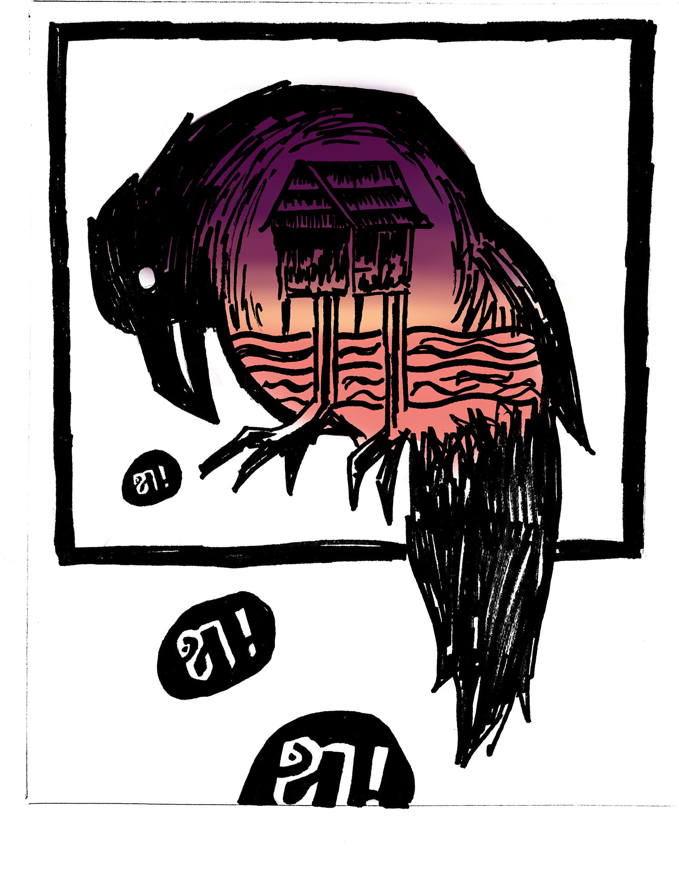
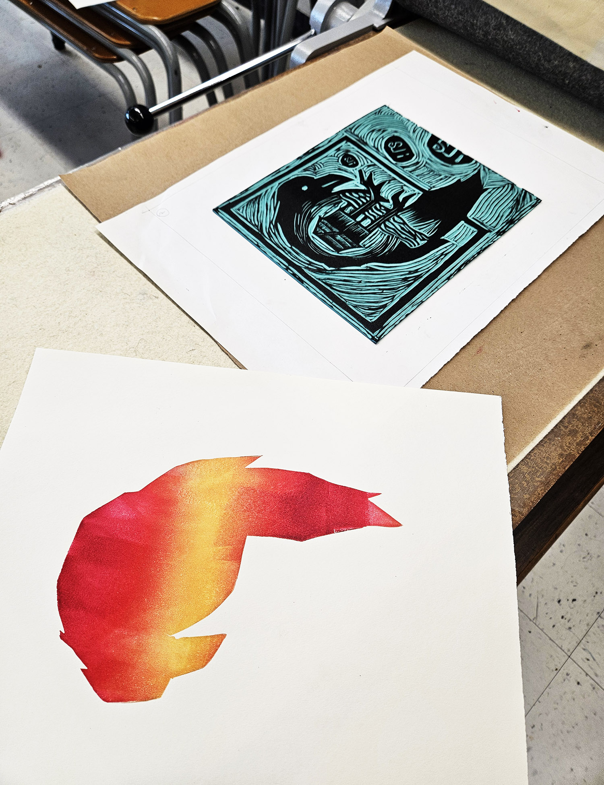
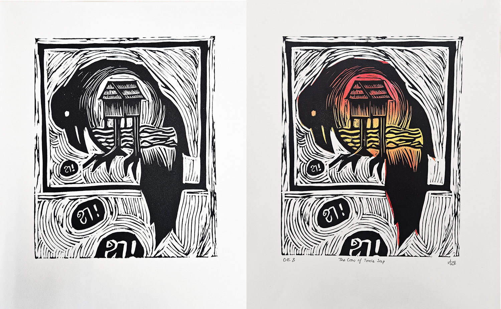

Process: Step 1
Sketch and transfer
After settling on a sketch, I made a clean sketch on printer paper with sharpie in the desired dimensions. Then I placed the paper drawing side down on the linoleum block. I transferred the drawing by rubbing on it with acetone.

Process: Step 2
Carve, Ink, Test Print
After carving the image into the linoleum block, I applied several layers of black ink with a roller. I then stamped it onto a piece of test paper.

Process: Step 3
Accent Colours
I planned a gradient effect in Photoshop, then cut out a smaller piece of linoleum around the same shape as the crow. After careful measuring, I printed the gradient by itself, positioned exactly where I intended it to be relative to the black part of the print.


Process: Step 4
Final printing
After printing the gradient, I used the fully carved linoleum block to print on top of the gradient. Below is a side-by-side comparison of the print without and with the gradient.
